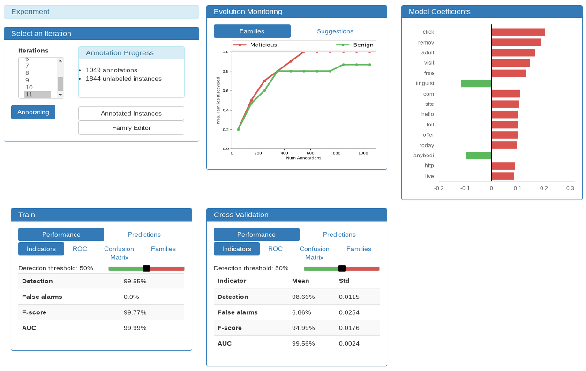
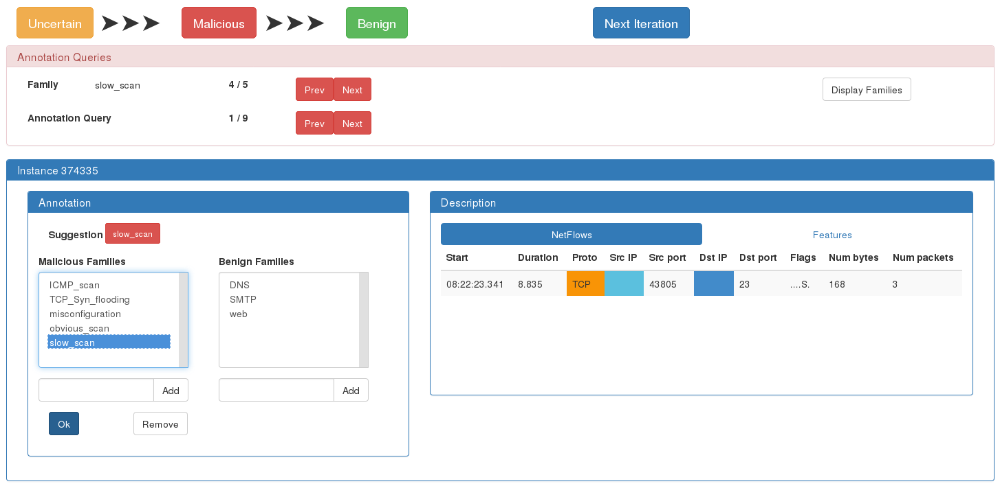

ILAB: Interactive LABeling¶
Annotating a Dataset with a Reduced Workload thanks to Active Learning.
SecuML_ILAB <project> <dataset> -a <init_annotations.csv> <strategy>.SecuML_ILAB <project> <dataset> <strategy> -h.ILAB is an end-to-end active learning system that we have designed in order to reduce the workload in annotation projects. It consists in active learning strategies integrated in an annotation system.
Active Learning Strategies. ILAB proposes several active learning strategies that aim to maximize the detection performance for a given annotation budget. They ask to annotate the most informative instances to minimize the number of manual annotations while maximizing the detection performance.
Annotation System. ILAB comes with a graphical user interface to display the annotation queries and gather the corresponding answers. The graphical user interface offers other features to assist experts along the annotation process.
References
Beaugnon, Anaël. “Expert-in-the-Loop Supervised Learning for Computer Security Detection Systems.”], Ph.D. thesis, École Normale Superieure (2018).
Beaugnon et al., “End-to-End Active Learning for Computer Security Experts”, AICS 2018.
Beaugnon et al., “ILAB: An Interactive Labelling Strategy for Intrusion Detection”, RAID 2017.
Active Learning¶
Interactive Process¶
ILAB relies on an interactive process where an expert is asked to annotate some unlabeled instances to improve the performance of the supervised detection model. At each iteration, some instances are queried from the unlabeled pool for annotation. The expert annotates the queried instances, and the new annotated instances are added to the annotated dataset. Then, the supervised detection model is updated, and new instances are queried for annotation.
{kind=link}
Annotations. Annotating consists in assigning a binary label, malicious or benign, and optionally a family detailing the binary label. Instances sharing the same family behave similarly and have the same level of criticality. For example, malicious instances belonging to the same family may exploit the same vulnerability, they may be polymorphic variants of the same malware, or they may be email messages coming from the same spam campaign.
Strategies Available¶
ILAB offers many active learning strategies:
Note
We recommend using Ilab. This active learning strategy has been extensively compared 1 to Aladin, Gornitz, and UncertaintySampling. ILAB maximizes the detection performance while minimizing both the number of manual annotations and the execution time. Its low execution time enables to update the detection model frequently without inducing long waiting-periods.
References
- 1(1,2)
Beaugnon et al., “ILAB: An Interactive Labelling Strategy for Intrusion Detection”, RAID 2017.
- 2
Stokes et al., Aladin: “Active learning of anomalies to detect intrusions”, technical report 2008.
- 3
Görnitz et al, “Active learning for network intrusion detection”, AISEC 2009.
- 4
Cesa-Bianchi et al., “Worst-case analysis of selective sampling for linear classification”, JMLR 2006.
- 5
Lewis et al., “A sequential algorithm for training text classifiers”, 1994.
Parameters¶
In addition to the parameters shared by all experiments, active learning strategies have the following optional parameters.
Initial Annotations¶
--annotations <filename>.csv, default value: None.
Active learning strategies require some initial annotations for both classes (benign and malicious).
Note
The annotations files are stored in
<input_data_dir>/<project>/<dataset>/annotations/ where input data
directory <input_data_dir> is specified in the
configuration file.
Mode: Interactive or Oracle¶
--auto, default value: False.
ILAB offers to modes: Interactive (without --auto) and Oracle
(with --auto).
Interactive Mode. A human must answer the annotation queries manually from the web interface at each iteration.
Oracle Mode. The annotation queries are answered automatically by an oracle with the ground-truth labels an families. This mode is usefull to design new active learning strategies and to make comparisons automatically.
Note
The oracle mode requires that the ground truth is known and stored in
<input_data_dir>/<project>/<dataset>/idents.csv where
input data directory <input_data_dir> is specified in the
configuration file.
Annotation Budget¶
--budget <num_annotations>, default value: 2000.
The annotation budget corresponds to the number of annotations asked during the active learning process.
Validation Dataset¶
--validation-datasets <datasets>, default value: None.
A list validation datasets can be indicated. In this case, at each iteration, the performance of the current detection model is assessed on the validation datasets.
The validation datasets can be processed as a stream by specifying
--streaming. The validation instances are not loaded into memory at once
which allows to process bigger datasets.
The batch size of the streaming process can be specified with the optional
argument --stream-batch <size> (default value: 1000).
Specific Parameters¶
In addition to these common parameters, some active learning strategy have
their own parameters. For more information about the available options for a
given strategy:
SecuML_ILAB <project> <dataset> <strategy> -h.
Graphical User Interface¶
ILAB graphical user interface obviously includes an Annotation Interface to display and gather the answers to the annotation queries. Moreover, ILAB annotation system offers additional graphical user interfaces to ease data annotation: a Monitoring Interface, a Family Editor and an Annotated Instances Interface.
Monitoring Interface¶
ILAB Monitoring Interface displays information about the current detection model (Model Coefficients, Train and Cross Validation panels), and feedback about the annotation progress (Evolution Monitoring panel). Moreover, the Monitoring Interface gives access to the Annotated Instances Interface and to the Family Editor.
Feedback about Annotation Progress¶
ILAB provides feedback to experts across iterations to show them the benefit of their annotations, and that they are on track to achieve their goal. In simulated experiments, where an oracle answers the queries automatically with the ground-truth labels, the performance of the detection model on an independent validation dataset is usually reported. Nevertheless, this approach is not applicable in a real-world setting: when security expert deploy an annotation system to build a training dataset they do not have access to an annotated validation dataset.
ILAB Evolution Monitoring panel displays two kinds of feedback that do not require an annotated validation dataset:
the number of malicious and benign families discovered so far, and,
the accuracy of the suggested labels and families.
Note
The accuracy of the suggested labels and families is available only with ILAB active learning strategy. At each iteration, ILAB suggests a family for the high likelihood queries. At the next iteration, ILAB computes the accuracy of these suggestions according to the last annotations performed by the expert.
This feedback can provide insight into the impact of new annotations. If the number of families discovered and the accuracy of the suggestions are stable for several iterations, the security expert may stop annotating.
Current Detection Model¶
The Monitoring Interface displays information about the detection model trained at a given iteration: the global behavior of the model (Model Coefficients or Features Importance panel) and performance indicators (Train, Cross Validation and Validation panels). These monitoring panels are part of DIADEM graphical user interface.
Annotation Interface¶
Experts can go trough the annotation queries thanks to the Annotation Queries panel. The bottom panel displays the queried instances (Description panel) and gathers the annotations (Annotation panel).
Description Panel¶
The Description panel contains information about the instance that must be annotated. It consists of a standard visualization depicting the instance features, and of optional problem-specific visualizations.
Annotation Panel¶
Experts can annotate the selected instance with the Annotation panel. For each label, it displays the list of the families already discovered. Experts can pick a family among a list or add a new one.
The interface suggests a family for high likelihood queries and pre-selects it. It helps experts since the model is confident about these predictions. On the contrary, ILAB makes no suggestion for uncertain and low likelihood queries. The model is indeed unsure about the family of these instances and unreliable suggestions may mislead experts.
The next query is displayed automatically after each annotation validation.
Experts can click on the Next Iteration button to generate the next queries
after answering all the queries of the current iteration. If some queries have
not been answered, a pop-up window asks the annotator to answer them.
Family Editor¶
The family editor allows to perform three actions over the families:
Change Name to clarify the name of a family ;
Merge Families to regroup similar families ;
Swap Malicious / Benign to change the label corresponding to a given family.

Annotated Instances Interface¶
This interface allows to review their previous annotations. It displays the currently annotated instances grouped according to their associated label or family.
Security experts can leverage this interface to examine the instances of a given family, or to rectify previous annotations. Thanks to the Family Editor, they can perform high-level changes on the families, but they cannot split them. They can split a family thanks to the Annotated Instances Interface by going through all its instances and updating the annotations.